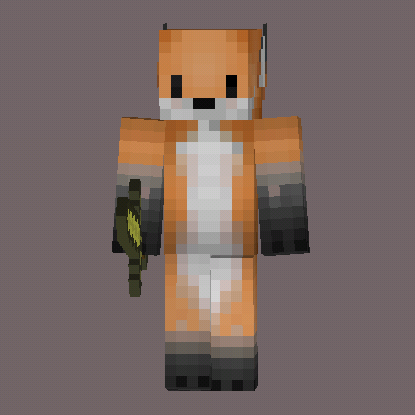

2048 Physics
2048 物理版（原设想尚未完全实现），加入了撤销功能。
创建时间：
2014.03.21最后更新：
2015.02.10
Minecraft PE Mod
探索 Minecraft PE 的 mod 能实现的功能，顺便练习 Javascript 。
2048 物理版（原设想尚未完全实现），加入了撤销功能。
探索 Minecraft PE 的 mod 能实现的功能，顺便练习 Javascript 。

狸站是一个用文本编辑器完全从无到有编写出来的网站。

LeNote 是服务于狸笔记的一个 LaTeX 模版开发项目。